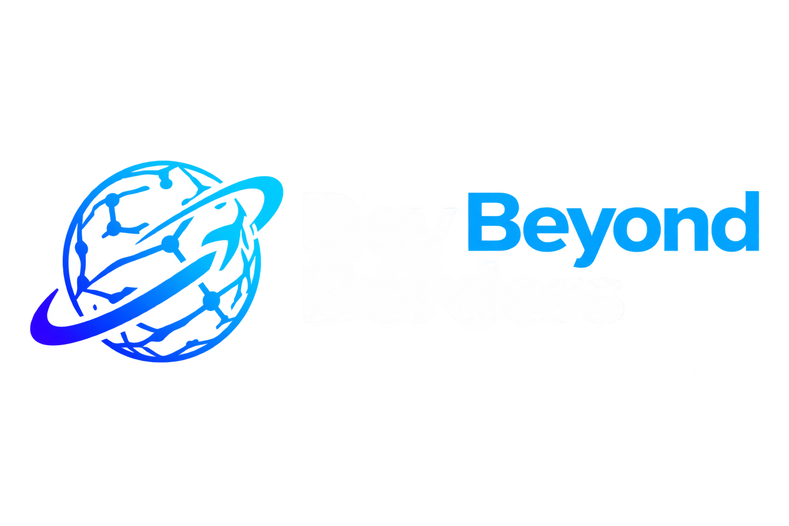

Mentoria prática para engenheiros de software e profissionais de dados que querem trabalhar para empresas do exterior e receber em dólar.
+10 anos de experiência | Ex-entrevistador técnico | Experiência global
Resultado: poucas entrevistas e nenhuma oferta
+10 anos na indústria, experiência como entrevistador técnico, ofertas FAANG e atuação como Principal Technical Lead em empresa internacional.
Diagnóstico rápido com plano de ação.
Programa estruturado com acompanhamento.
Comece pelo treinamento Rota Global Tech e aprenda a estratégia utilizada por profissionais que conquistam oportunidades internacionais.
Acessar o Mini CursoOu, se preferir um acompanhamento personalizado:
Mentoria PremiumPreciso falar inglês fluente?
Intermediário já funciona.
Funciona para qualquer stack?
Sim, focamos em estratégia.
Quanto tempo para resultados?
Algumas semanas.